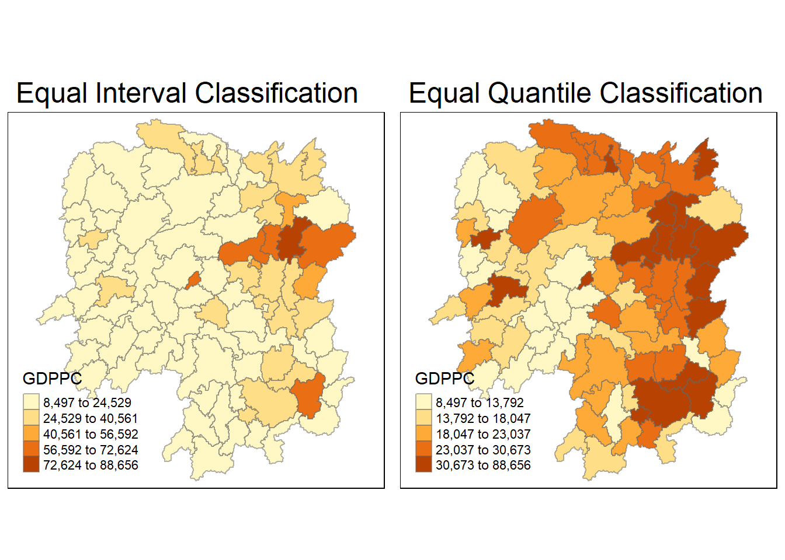
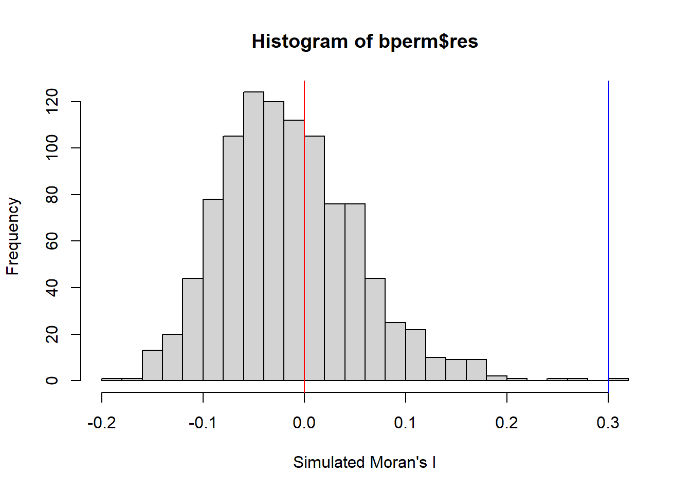
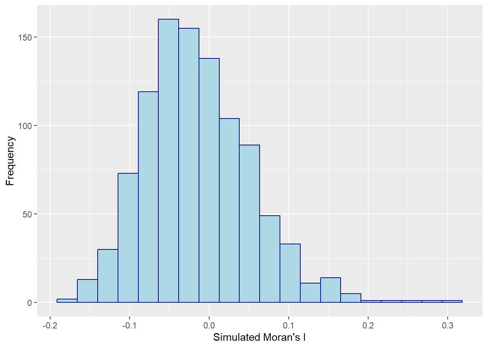
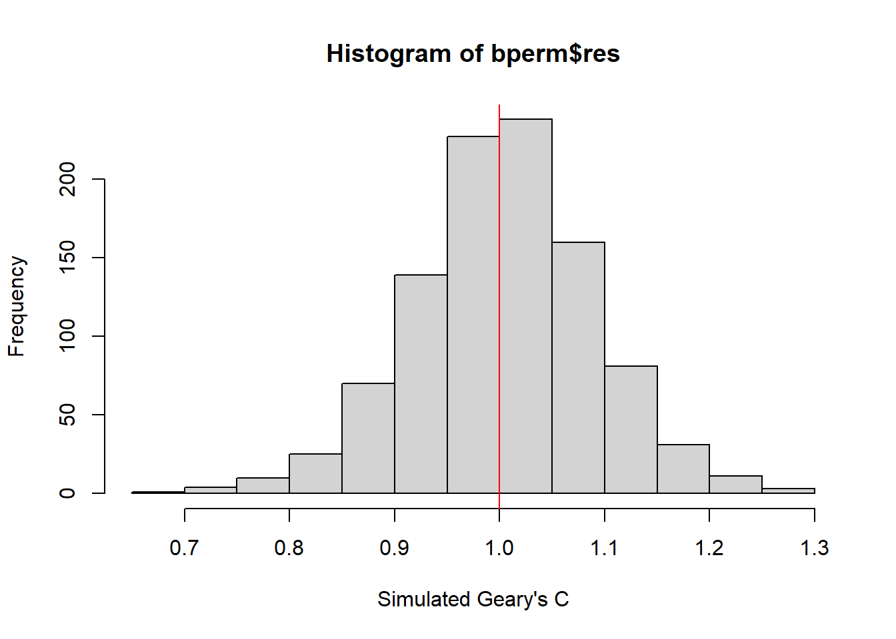
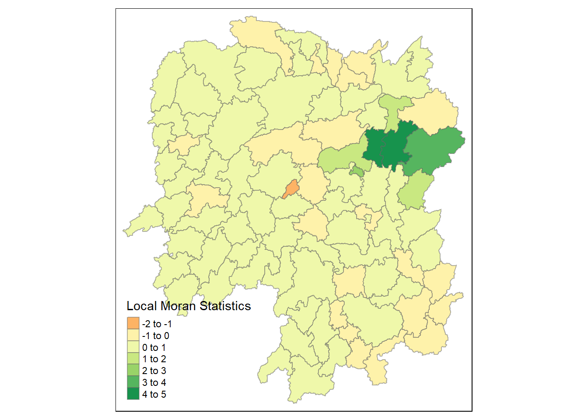
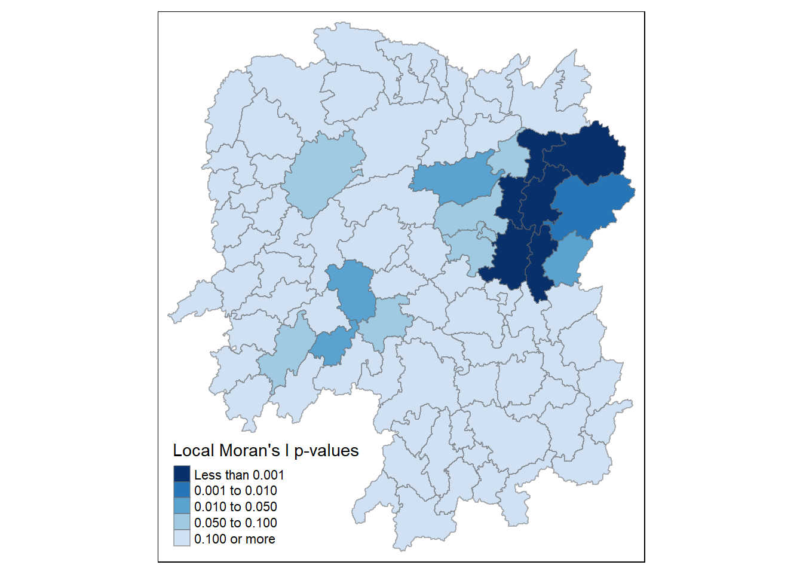
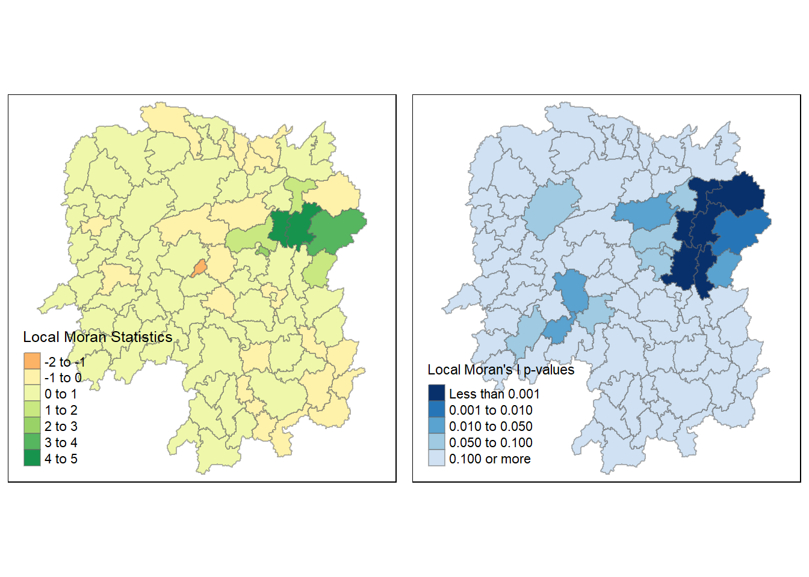

pacman::p_load(sf, spdep, tmap, tidyverse)Global and Local Measures of Spatial Autocorrelation
1 Overview
In this hands-on exercise, I learned how to compute Global and Local Measure of Spatial Autocorrelation (GLSA) by using spdep package. By the end to this hands-on exercise, I was able to:
import geospatial data using appropriate function(s) of sf package,
import csv file using appropriate function of readr package,
perform relational join using appropriate join function of dplyr package,
compute Global Spatial Autocorrelation (GSA) statistics by using appropriate functions of spdep package,
plot Moran scatterplot,
compute and plot spatial correlogram using appropriate function of spdep package.
compute Local Indicator of Spatial Association (LISA) statistics for detecting clusters and outliers by using appropriate functions spdep package;
compute Getis-Ord’s Gi-statistics for detecting hot spot or/and cold spot area by using appropriate functions of spdep package; and
to visualise the analysis output by using tmap package.
2 Getting Started
2.1 The analytical question
In spatial policy, one of the main development objectives of the local govenment and planners is to ensure equal distribution of development in the province. Our task in this study, hence, is to apply appropriate spatial statistical methods to discover if development are even distributed geographically.
If the answer is No. Then, our next question would be “is there sign of spatial clustering?”. And, if the answer for this question is Yes, then our next question will be “where are these clusters?”
In this case study, we are interested to examine the spatial pattern of a selected development indicator (i.e. GDP per capita or GDPPC) of Hunan Province, People Republic of China.
2.2 The Study Area and Data
Two data sets will be used in this hands-on exercise, they are:
Hunan province administrative boundary layer at county level. This is a geospatial data set in ESRI shapefile format.
Hunan_2012.csv: This csv file contains selected Hunan’s local development indicators in 2012.
2.3 Setting the Analytical Tools
The code chunk below installs and loads sf, spdep, tmap and tidyverse packages into R environment. pacman() is a R package management tool. It provides intuitively named functions for the base functions.
3 Importing Data into R Environment
The geospatial data is in ESRI shapefile format and the attribute table is in csv fomat.
3.1 Import shapefile into R
The code chunk below uses st_read() of sf package to import Hunan shapefile into R. The imported shapefile will be simple features object of sf.
hunan <- st_read(dsn = 'data\\geospatial',
layer = 'Hunan')Reading layer `Hunan' from data source
`C:\ameliachuayt\ISSS624\Exercises\Hands-on_Ex2\data\geospatial'
using driver `ESRI Shapefile'
Simple feature collection with 88 features and 7 fields
Geometry type: POLYGON
Dimension: XY
Bounding box: xmin: 108.7831 ymin: 24.6342 xmax: 114.2544 ymax: 30.12812
Geodetic CRS: WGS 84From the output, we can see that there are 88 multipolygons and 7 fields.
3.2 Import csv file into R
hunan2012 <- read_csv("data\\aspatial\\Hunan_2012.csv", show_col_types = FALSE)3.3 Performing relational join
The code chunk below will be used to update the attribute table of hunan’s SpatialPolygonsDataFrame with the attribute fields of hunan2012 dataframe. This is performed by using left_join() of dplyr package.
hunan <- left_join(hunan, hunan2012)Joining, by = "County"3.4 Visualising Regional Development Indicator
The code chunk below is used to prepare two stand-alone choropleth maps to visualise the distribution of GDPPC 2012 by using gtm() of tmap package. The map on the left will be classified using equal intervals and the one on the right will be classified using quantiles.
Then by using tmap_arrange() of tmap package, we will create a facet map.
Note that:
GDPPC refers to Gross Domestic Product per capita.
qtm() allows us to plot thematic maps quickly.
equal <- tm_shape(hunan) +
tm_fill("GDPPC",
n = 5,
style = 'equal') +
tm_borders(alpha = 0.5) +
tm_layout(main.title = 'Equal Interval Classification')
quantile <- tm_shape(hunan) +
tm_fill("GDPPC",
n = 5,
style = 'quantile') +
tm_borders(alpha = 0.5) +
tm_layout(main.title = "Equal Quantile Classification")
tmap_arrange(equal, quantile, asp = 1, ncol = 2)
4 Global Spatial Autocorrelation
In this section, I learned how to compute global spatial autocorrelation statistics and how to perform spatial complete randomness test for global spatial autocorrelation.
4.1 Computing Contiguity Spatial Weights
Before we can compute the global spatial autocorrelation statistics, we need to construct a spatial weights of the study area. The spatial weights is used to define the neighbourhood relationships between the geographical units (i.e. county) in the study area.
In the code chunk below, poly2nb() of spdep package is used to compute contiguity weight matrices for the study area. This function builds a neighbours list based on regions with contiguous boundaries. By default, Queen contiguity is applied.
wm_q <- poly2nb(hunan,
queen = TRUE)
summary(wm_q)Neighbour list object:
Number of regions: 88
Number of nonzero links: 448
Percentage nonzero weights: 5.785124
Average number of links: 5.090909
Link number distribution:
1 2 3 4 5 6 7 8 9 11
2 2 12 16 24 14 11 4 2 1
2 least connected regions:
30 65 with 1 link
1 most connected region:
85 with 11 linksThe summary report above shows that there are 88 area units in Hunan. The most connected area unit has 11 neighbours. There are two least connected area with only one neighbour.
4.2 Row-standardised weights matrix
Next, we need to assign weights to each neighboring polygon. In our case, each neighboring polygon will be assigned equal weight (style="W"). This is accomplished by assigning the fraction 1/(#ofneighbors) to each neighbouring county then summing the weighted income values.
While this is the most intuitive way to summaries the neighbors' values it has one drawback in that polygons along the edges of the study area will base their lagged values on fewer polygons thus potentially over- or under-estimating the true nature of the spatial autocorrelation in the data.
Note that other more robust options are available, notably style="B".
rswm_q <- nb2listw(wm_q,
style = "W",
zero.policy = TRUE)
rswm_qCharacteristics of weights list object:
Neighbour list object:
Number of regions: 88
Number of nonzero links: 448
Percentage nonzero weights: 5.785124
Average number of links: 5.090909
Weights style: W
Weights constants summary:
n nn S0 S1 S2
W 88 7744 88 37.86334 365.91474.3 Global Spatial Autocorrelation: Moran’s I
In this section, I learned how to perform Moran’s I statistical testing by using moran.test() of spdep.
moran.test(x, listw, randomisation=TRUE, zero.policy=NULL,
alternative="greater", rank = FALSE, na.action=na.fail, spChk=NULL,
adjust.n=TRUE, drop.EI2=FALSE)Moran’s I describe how features differ from the values in the study area as a whole. If the Moran I (Z-value is):
positive (I>0): Clustered, observations tend to be similar
negative (I<0): Disperse, observations tend to be dissimilar
approximately zero: observations arranged randomly over space
We will test the following hypothesis:
H0: Observed spatial patterns of values is equally likely as any other spatial pattern i.e. data is randomly disbursed, no spatial pattern
H1: Data is more spatially clustered than expected by chance alone.
moran.test(hunan$GDPPC,
listw = rswm_q,
zero.policy = TRUE,
na.action = na.omit)
Moran I test under randomisation
data: hunan$GDPPC
weights: rswm_q
Moran I statistic standard deviate = 4.7351, p-value = 1.095e-06
alternative hypothesis: greater
sample estimates:
Moran I statistic Expectation Variance
0.300749970 -0.011494253 0.004348351 Since the p-value < 0.05, we have sufficient statistical evidence to reject the null hypothesis at the 95% level of confidence. This means that data is more spatially clustered than expected by chance alone. Since Moran I statistic > 0.300, the observation are clustered, observations tend to be similar.
4.3.1 Computing Monte Carlo Moran’s I
If we have doubts that the assumptions of Moran’s I are true (normality and randomisation), we can use a Monte Carlo simulation to perform a permutation test for Moran’s I.
The permutation tests consists of randomly reassigning the attribute values to a cell under the assumption of no spatial pattern. This random assignment is conducted n times. Each time, we will compute the Moran’s I to creating an empirical distribution of Moran’s I under H0.
The code chunk below performs permutation test for Moran's I statistic by using moran.mc() of spdep. A total of 1000 simulation will be performed.
moran.mc(x, listw, nsim, zero.policy=NULL, alternative="greater",
na.action=na.fail, spChk=NULL, return_boot=FALSE, adjust.n=TRUE)We will test the following hypothesis using a one-tailed test:
H0: Observed spatial patterns of values is equally likely as any other spatial pattern i.e. data is randomly disbursed, no spatial pattern
H1: Data is more spatially clustered than expected by chance alone.
set.seed(1234)
bperm = moran.mc(hunan$GDPPC,
listw = rswm_q,
nsim = 999,
zero.policy = TRUE,
na.action = na.omit)
bperm
Monte-Carlo simulation of Moran I
data: hunan$GDPPC
weights: rswm_q
number of simulations + 1: 1000
statistic = 0.30075, observed rank = 1000, p-value = 0.001
alternative hypothesis: greaterSince the pseudo p-value < 0.05, we have sufficient statistical evidence to reject the null hypothesis at the 95% level of confidence. This means that data is more spatially clustered than expected by chance alone.
4.3.2 Visualising Monte Carlo Moran’s I
We can examine the simulated Moran's I test statistics in greater detail through descriptive statistics and plotting the distribution of the statistical values as a histogram by using the code chunks below.
The mean gives the average of Moran’s I for all simulated distributions.
mean(bperm$res[1:999])[1] -0.01504572The variance of Moran's I for all simulated distributions can be computed using this code chunk.
var(bperm$res[1:999])[1] 0.004371574summary(bperm$res[1:999]) Min. 1st Qu. Median Mean 3rd Qu. Max.
-0.18339 -0.06168 -0.02125 -0.01505 0.02611 0.27593 hist(bperm$res,
freq = TRUE,
breaks = 20,
xlab = "Simulated Moran's I")
abline(v=0,
col = 'red')
abline(v=0.30075, #actual moran's I
col = 'blue')
From the output above, we can see that the distribution of the simulated values of Moran’s I is slightly skewed to the right. The blue line above indicates the actual value of Moran’s I, which is near the extremes of the distribution. This suggests that there is evidence of positive autocorrelation i.e. cluster. (Reference)
We can also plot the above graph using ggplot2 package. To do so, we must first convert the results into a dataframe.
df <- as.data.frame(bperm$res)
colnames(df) <- c("Simulated Moran's I")ggplot(df, aes(x=`Simulated Moran's I`)) +
geom_histogram(color = "darkblue", fill = "lightblue", bins = 20) +
ylab('Frequency')
4.4 Global Spatial Autocorrelation: Geary’s C
In this section, I learned how to perform Geary's C statistics testing by using appropriate functions of spdep package.
4.4.1 Geary’s C Test
Geary’s C describe how features differ from their immediate neighbours. If the Geary’s C (Z-value is):
Large (c>1): Dispersed, observations tend to be dissimilar
Small (c<1): Clustered, observations tend to be similar
c = 1: observations arranged randomly over space
We will test the following hypothesis:
H0: Observed spatial patterns of values is equally likely as any other spatial pattern i.e. data is randomly disbursed, no spatial pattern
H1: Data is more spatially clustered than expected by chance alone
The code chunk below performs Geary's C test for spatial autocorrelation by using geary.test() of spdep.
geary.test(x, listw, randomisation=TRUE, zero.policy=NULL,
alternative="greater", spChk=NULL, adjust.n=TRUE)geary.test(hunan$GDPPC, listw = rswm_q)
Geary C test under randomisation
data: hunan$GDPPC
weights: rswm_q
Geary C statistic standard deviate = 3.6108, p-value = 0.0001526
alternative hypothesis: Expectation greater than statistic
sample estimates:
Geary C statistic Expectation Variance
0.6907223 1.0000000 0.0073364 Since the p-value = 0.0001526 < 0.05, we have sufficient statistical evidence to reject the null hypothesis at the 95% level of confidence. This means that data is more spatially clustered than expected by chance alone.
4.4.2 Computing Monte Carlo Geary’s C
The code chunk below performs permutation test for Geary's C statistic by using geary.mc() of spdep.
set.seed(1234)
bperm = geary.mc(hunan$GDPPC,
listw = rswm_q,
nsim = 999)
bperm
Monte-Carlo simulation of Geary C
data: hunan$GDPPC
weights: rswm_q
number of simulations + 1: 1000
statistic = 0.69072, observed rank = 1, p-value = 0.001
alternative hypothesis: greaterSince the pseudo p-value = 0.001 < 0.05, we have sufficient statistical evidence to reject the null hypothesis at the 95% level of confidence. This means that data is more spatially clustered than expected by chance alone.
4.4.3 Visualising the Monte Carlo Geary’s C
We can examine the simulated Geary’s C test statistics in greater detail through descriptive statistics and plotting the distribution of the statistical values as a histogram by using the code chunks below.
The mean gives the average of Geary’s C for all simulated distributions.
mean(bperm$res[1:999])[1] 1.004402The variance of Geary’s C for all simulated distributions can be computed using this code chunk.
var(bperm$res[1:999])[1] 0.007436493summary(bperm$res[1:999]) Min. 1st Qu. Median Mean 3rd Qu. Max.
0.7142 0.9502 1.0052 1.0044 1.0595 1.2722 hist(bperm$res,
freq = TRUE,
breaks = 20,
xlab = "Simulated Geary's C")
abline(v=1,
col = 'red')
From the output above, we can see that the distribution of the simulated values of Moran’s I fairly normally distributed.
5 Spatial Correlogram
Spatial correlograms are great to examine patterns of spatial autocorrelation in your data or model residuals. They show how correlated are pairs of spatial observations when you increase the distance (lag) between them - they are plots of some index of autocorrelation (Moran's I or Geary's c) against distance.Although correlograms are not as fundamental as variograms (a keystone concept of geostatistics), they are very useful as an exploratory and descriptive tool. For this purpose they actually provide richer information than variograms.
5.1 Compute Moran’s I correlogram
In the code chunk below, sp.correlogram() of spdep package is used to compute a 6-lag spatial correlogram of GDPPC. The global spatial autocorrelation used in Moran's I. The plot() of base Graph is then used to plot the output.
sp.correlogram(neighbours, var, order = 1, method = "corr",
style = "W", randomisation = TRUE, zero.policy = NULL, spChk=NULL)
# S3 method for spcor
plot(x, main, ylab, ylim, ...)
# S3 method for spcor
print(x, p.adj.method="none", ...)MI_corr <- sp.correlogram(wm_q, #note that we used the original weights matrix
hunan$GDPPC,
order = 6,
method = 'I',
style = 'W')
plot(MI_corr)
Next, let’s examine the full analysis report and view which values are statistically significant.
print(MI_corr)Spatial correlogram for hunan$GDPPC
method: Moran's I
estimate expectation variance standard deviate Pr(I) two sided
1 (88) 0.3007500 -0.0114943 0.0043484 4.7351 2.189e-06 ***
2 (88) 0.2060084 -0.0114943 0.0020962 4.7505 2.029e-06 ***
3 (88) 0.0668273 -0.0114943 0.0014602 2.0496 0.040400 *
4 (88) 0.0299470 -0.0114943 0.0011717 1.2107 0.226015
5 (88) -0.1530471 -0.0114943 0.0012440 -4.0134 5.984e-05 ***
6 (88) -0.1187070 -0.0114943 0.0016791 -2.6164 0.008886 **
---
Signif. codes: 0 '***' 0.001 '**' 0.01 '*' 0.05 '.' 0.1 ' ' 1From the output, we see that with the exception of Lag 4, the rest of the results are statistically significant at the 95% level of confidence.
5.2 Compute Geary’s C correlogram and plot
In the code chunk below, sp.correlogram() of spdep package is used to compute a 6-lag spatial correlogram of GDPPC. The global spatial autocorrelation used in Geary's C. The plot() of base Graph is then used to plot the output.
GC_corr <- sp.correlogram(wm_q,
hunan$GDPPC,
order = 6,
method = "C",
style = "W")
plot(GC_corr)
Next, let’s examine the full analysis report and view which values are statistically significant.
print(GC_corr)Spatial correlogram for hunan$GDPPC
method: Geary's C
estimate expectation variance standard deviate Pr(I) two sided
1 (88) 0.6907223 1.0000000 0.0073364 -3.6108 0.0003052 ***
2 (88) 0.7630197 1.0000000 0.0049126 -3.3811 0.0007220 ***
3 (88) 0.9397299 1.0000000 0.0049005 -0.8610 0.3892612
4 (88) 1.0098462 1.0000000 0.0039631 0.1564 0.8757128
5 (88) 1.2008204 1.0000000 0.0035568 3.3673 0.0007592 ***
6 (88) 1.0773386 1.0000000 0.0058042 1.0151 0.3100407
---
Signif. codes: 0 '***' 0.001 '**' 0.01 '*' 0.05 '.' 0.1 ' ' 1From the output, we see that with the exception of Lag 3, 4 and 6, the rest of the results are statistically significant at the 95% level of confidence.
6 Cluster and Outlier Analysis
Local Indicators of Spatial Association or LISA are statistics that evaluate the existence of clusters in the spatial arrangement of a given variable. For instance if we are studying cancer rates among census tracts in a given city, local clusters in the rates mean that there are areas that have higher or lower rates than is to be expected by chance alone; that is, the values occurring are above or below those of a random distribution in space.
In this section, I learned how to apply appropriate Local Indicators for Spatial Association (LISA), especially local Moran's I to detect cluster and/or outlier from GDP per capita 2012 of Hunan Province, PRC.
6.1 Computing local Moran’s I
To compute local Moran's I, the localmoran() function of spdep will be used. It computes Ii values, given a set of zi values and a listw object providing neighbour weighting information for the polygon associated with the zi values.
The code chunks below are used to compute local Moran's I of GDPPC2012 at the county level.
localMI <- localmoran(hunan$GDPPC, rswm_q)
head(localMI) Ii E.Ii Var.Ii Z.Ii Pr(z != E(Ii))
1 -0.001468468 -2.815006e-05 4.723841e-04 -0.06626904 0.9471636
2 0.025878173 -6.061953e-04 1.016664e-02 0.26266425 0.7928094
3 -0.011987646 -5.366648e-03 1.133362e-01 -0.01966705 0.9843090
4 0.001022468 -2.404783e-07 5.105969e-06 0.45259801 0.6508382
5 0.014814881 -6.829362e-05 1.449949e-03 0.39085814 0.6959021
6 -0.038793829 -3.860263e-04 6.475559e-03 -0.47728835 0.6331568localmoran() returns a matrix of values whose columns are:
Ii: the local Moran's I statistics
E.Ii: the expectation of local moran statistic under the randomisation hypothesis
Var.Ii: the variance of local moran statistic under the randomisation hypothesis
Z.Ii:the standard deviation of local moran statistic
Pr(): the p-value of local moran statistic
The code chunk below list the content of the local Moran matrix derived by using printCoefmat().
fips <- order(hunan$County) #order in alphabetical order, returns index of the variable
printCoefmat(data.frame(localMI[fips,],
row.names=hunan$County[fips]), check.names=FALSE) Ii E.Ii Var.Ii Z.Ii Pr.z....E.Ii..
Anhua -2.2493e-02 -5.0048e-03 5.8235e-02 -7.2467e-02 0.9422
Anren -3.9932e-01 -7.0111e-03 7.0348e-02 -1.4791e+00 0.1391
Anxiang -1.4685e-03 -2.8150e-05 4.7238e-04 -6.6269e-02 0.9472
Baojing 3.4737e-01 -5.0089e-03 8.3636e-02 1.2185e+00 0.2230
Chaling 2.0559e-02 -9.6812e-04 2.7711e-02 1.2932e-01 0.8971
Changning -2.9868e-05 -9.0010e-09 1.5105e-07 -7.6828e-02 0.9388
Changsha 4.9022e+00 -2.1348e-01 2.3194e+00 3.3590e+00 0.0008
Chengbu 7.3725e-01 -1.0534e-02 2.2132e-01 1.5895e+00 0.1119
Chenxi 1.4544e-01 -2.8156e-03 4.7116e-02 6.8299e-01 0.4946
Cili 7.3176e-02 -1.6747e-03 4.7902e-02 3.4200e-01 0.7324
Dao 2.1420e-01 -2.0824e-03 4.4123e-02 1.0297e+00 0.3032
Dongan 1.5210e-01 -6.3485e-04 1.3471e-02 1.3159e+00 0.1882
Dongkou 5.2918e-01 -6.4461e-03 1.0748e-01 1.6338e+00 0.1023
Fenghuang 1.8013e-01 -6.2832e-03 1.3257e-01 5.1198e-01 0.6087
Guidong -5.9160e-01 -1.3086e-02 3.7003e-01 -9.5104e-01 0.3416
Guiyang 1.8240e-01 -3.6908e-03 3.2610e-02 1.0305e+00 0.3028
Guzhang 2.8466e-01 -8.5054e-03 1.4152e-01 7.7931e-01 0.4358
Hanshou 2.5878e-02 -6.0620e-04 1.0167e-02 2.6266e-01 0.7928
Hengdong 9.9964e-03 -4.9063e-04 6.7742e-03 1.2742e-01 0.8986
Hengnan 2.8064e-02 -3.2160e-04 3.7597e-03 4.6294e-01 0.6434
Hengshan -5.8201e-03 -3.0437e-05 5.1076e-04 -2.5618e-01 0.7978
Hengyang 6.2997e-02 -1.3046e-03 2.1865e-02 4.3486e-01 0.6637
Hongjiang 1.8790e-01 -2.3019e-03 3.1725e-02 1.0678e+00 0.2856
Huarong -1.5389e-02 -1.8667e-03 8.1030e-02 -4.7503e-02 0.9621
Huayuan 8.3772e-02 -8.5569e-04 2.4495e-02 5.4072e-01 0.5887
Huitong 2.5997e-01 -5.2447e-03 1.1077e-01 7.9685e-01 0.4255
Jiahe -1.2431e-01 -3.0550e-03 5.1111e-02 -5.3633e-01 0.5917
Jianghua 2.8651e-01 -3.8280e-03 8.0968e-02 1.0204e+00 0.3076
Jiangyong 2.4337e-01 -2.7082e-03 1.1746e-01 7.1800e-01 0.4728
Jingzhou 1.8270e-01 -8.5106e-04 2.4363e-02 1.1759e+00 0.2396
Jinshi -1.1988e-02 -5.3666e-03 1.1334e-01 -1.9667e-02 0.9843
Jishou -2.8680e-01 -2.6305e-03 4.4028e-02 -1.3543e+00 0.1756
Lanshan 6.3334e-02 -9.6365e-04 2.0441e-02 4.4972e-01 0.6529
Leiyang 1.1581e-02 -1.4948e-04 2.5082e-03 2.3422e-01 0.8148
Lengshuijiang -1.7903e+00 -8.2129e-02 2.1598e+00 -1.1623e+00 0.2451
Li 1.0225e-03 -2.4048e-07 5.1060e-06 4.5260e-01 0.6508
Lianyuan -1.4672e-01 -1.8983e-03 1.9145e-02 -1.0467e+00 0.2952
Liling 1.3774e+00 -1.5097e-02 4.2601e-01 2.1335e+00 0.0329
Linli 1.4815e-02 -6.8294e-05 1.4499e-03 3.9086e-01 0.6959
Linwu -2.4621e-03 -9.0703e-06 1.9258e-04 -1.7676e-01 0.8597
Linxiang 6.5904e-02 -2.9028e-03 2.5470e-01 1.3634e-01 0.8916
Liuyang 3.3688e+00 -7.7502e-02 1.5180e+00 2.7972e+00 0.0052
Longhui 8.0801e-01 -1.1377e-02 1.5538e-01 2.0787e+00 0.0376
Longshan 7.5663e-01 -1.1100e-02 3.1449e-01 1.3690e+00 0.1710
Luxi 1.8177e-01 -2.4855e-03 3.4249e-02 9.9561e-01 0.3194
Mayang 2.1852e-01 -5.8773e-03 9.8049e-02 7.1663e-01 0.4736
Miluo 1.8704e+00 -1.6927e-02 2.7925e-01 3.5715e+00 0.0004
Nan -9.5789e-03 -4.9497e-04 6.8341e-03 -1.0988e-01 0.9125
Ningxiang 1.5607e+00 -7.3878e-02 8.0012e-01 1.8274e+00 0.0676
Ningyuan 2.0910e-01 -7.0884e-03 8.2306e-02 7.5356e-01 0.4511
Pingjiang -9.8964e-01 -2.6457e-03 5.6027e-02 -4.1698e+00 0.0000
Qidong 1.1806e-01 -2.1207e-03 2.4747e-02 7.6396e-01 0.4449
Qiyang 6.1966e-02 -7.3374e-04 8.5743e-03 6.7712e-01 0.4983
Rucheng -3.6992e-01 -8.8999e-03 2.5272e-01 -7.1814e-01 0.4727
Sangzhi 2.5053e-01 -4.9470e-03 6.8000e-02 9.7972e-01 0.3272
Shaodong -3.2659e-02 -3.6592e-05 5.0546e-04 -1.4510e+00 0.1468
Shaoshan 2.1223e+00 -5.0227e-02 1.3668e+00 1.8583e+00 0.0631
Shaoyang 5.9499e-01 -1.1253e-02 1.3012e-01 1.6807e+00 0.0928
Shimen -3.8794e-02 -3.8603e-04 6.4756e-03 -4.7729e-01 0.6332
Shuangfeng 9.2835e-03 -2.2867e-03 3.1516e-02 6.5174e-02 0.9480
Shuangpai 8.0591e-02 -3.1366e-04 8.9838e-03 8.5358e-01 0.3933
Suining 3.7585e-01 -3.5933e-03 4.1870e-02 1.8544e+00 0.0637
Taojiang -2.5394e-01 -1.2395e-03 1.4477e-02 -2.1002e+00 0.0357
Taoyuan 1.4729e-02 -1.2039e-04 8.5103e-04 5.0903e-01 0.6107
Tongdao 4.6482e-01 -6.9870e-03 1.9879e-01 1.0582e+00 0.2900
Wangcheng 4.4220e+00 -1.1067e-01 1.3596e+00 3.8873e+00 0.0001
Wugang 7.1003e-01 -7.8144e-03 1.0710e-01 2.1935e+00 0.0283
Xiangtan 2.4530e-01 -3.6457e-04 3.2319e-03 4.3213e+00 0.0000
Xiangxiang 2.6271e-01 -1.2703e-03 2.1290e-02 1.8092e+00 0.0704
Xiangyin 5.4525e-01 -4.7442e-03 7.9236e-02 1.9539e+00 0.0507
Xinhua 1.1810e-01 -6.2649e-03 8.6001e-02 4.2409e-01 0.6715
Xinhuang 1.5725e-01 -4.1820e-03 3.6648e-01 2.6667e-01 0.7897
Xinning 6.8928e-01 -9.6674e-03 2.0328e-01 1.5502e+00 0.1211
Xinshao 5.7578e-02 -8.5932e-03 1.1769e-01 1.9289e-01 0.8470
Xintian -7.4050e-03 -5.1493e-03 1.0877e-01 -6.8395e-03 0.9945
Xupu 3.2406e-01 -5.7468e-03 5.7735e-02 1.3726e+00 0.1699
Yanling -6.9021e-02 -5.9211e-04 9.9306e-03 -6.8667e-01 0.4923
Yizhang -2.6844e-01 -2.2463e-03 4.7588e-02 -1.2202e+00 0.2224
Yongshun 6.3064e-01 -1.1350e-02 1.8830e-01 1.4795e+00 0.1390
Yongxing 4.3411e-01 -9.0735e-03 1.5088e-01 1.1409e+00 0.2539
You 7.8750e-02 -7.2728e-03 1.2116e-01 2.4714e-01 0.8048
Yuanjiang 2.0004e-04 -1.7760e-04 2.9798e-03 6.9181e-03 0.9945
Yuanling 8.7298e-03 -2.2981e-06 2.3221e-05 1.8121e+00 0.0700
Yueyang 4.1189e-02 -1.9768e-04 2.3113e-03 8.6085e-01 0.3893
Zhijiang 1.0476e-01 -7.8123e-04 1.3100e-02 9.2214e-01 0.3565
Zhongfang -2.2685e-01 -2.1455e-03 3.5927e-02 -1.1855e+00 0.2358
Zhuzhou 3.2864e-01 -5.2432e-04 7.2391e-03 3.8688e+00 0.0001
Zixing -7.6849e-01 -8.8210e-02 9.4057e-01 -7.0144e-01 0.48306.1.1 Mapping the local Moran’s I
Before mapping the local Moran's I map, I would append the local Moran's I dataframe (i.e. localMI) onto hunan SpatialPolygonDataFrame. The code chunks below can be used to perform the task.
hunan.localMI <- cbind(hunan, localMI) %>%
rename(Pr.Ii = Pr.z....E.Ii..)6.1.2 Mapping local Moran’s I values
Using choropleth mapping functions of tmap package, we can plot the local Moran's I values by using the code chinks below.
localMI.map <- tm_shape(hunan.localMI) +
tm_fill(col = "Ii",
style = 'pretty',
title = "Local Moran Statistics") +
tm_borders(alpha = 0.5)
localMI.mapVariable(s) "Ii" contains positive and negative values, so midpoint is set to 0. Set midpoint = NA to show the full spectrum of the color palette.
6.1.3 Mapping local Moran’s I p-values
The choropleth above shows there is evidence for both positive and negative Ii values. However, it is useful to consider the p-values for each of these values, as consider above.
The code chunks below produce a choropleth map of Moran's I p-values by using functions of tmap package.
pvalue.map <- tm_shape(hunan.localMI) +
tm_fill(col = "Pr.Ii",
breaks = c(-Inf, 0.001, 0.01, 0.05, 0.1, Inf),
palette = "-Blues",
title = "Local Moran's I p-values") +
tm_borders(alpha = 0.5)
pvalue.map
6.1.4 Mapping both local Moran’s I values and
For effective interpretation, it is better to plot both the local Moran's I values map and its corresponding p-values map next to each other.
tmap_arrange(localMI.map, pvalue.map, asp = 1, ncol = 2)Variable(s) "Ii" contains positive and negative values, so midpoint is set to 0. Set midpoint = NA to show the full spectrum of the color palette.
7 References
Stephanie Glen. “Moran's I: Definition, Examples” From StatisticsHowTo.com: Elementary Statistics for the rest of us! https://www.statisticshowto.com/morans-i/